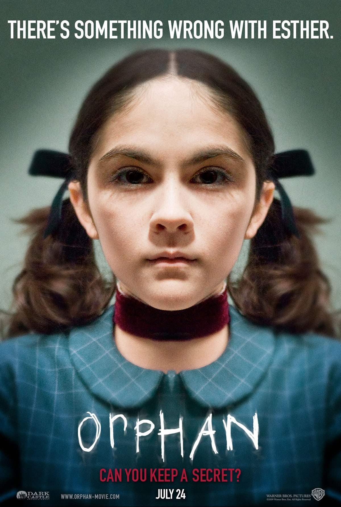

孤儿怨（Orphan，2009）
内容简介：
- 意外流产让满心期待宝宝降生的约翰（Peter Sarsgaard 饰）和凯特（Vera Farmiga 维拉•法米加 饰）深受打击，凯特精神几近崩溃，而他们的婚姻也岌岌可危。为了挽救濒临破败婚姻，这对夫妇前往孤儿院希望收养一个孩子。在这里，他们见到了有些特立独行的小女孩伊斯特（Isabelle Fuhrman 伊莎贝尔•福尔曼 饰）。小女孩所散发出的独特气质吸引了约翰夫妇，最终伊斯特成为他们家庭中的一员。
- 然而，随着伊斯特的到来，各种离奇事件接踵而至。凯特隐约感到，这个长着天使面容的小女孩背后有着不为人知的一面……
短评：
可播放资源：
- 爱奇艺视频 VIP免费观看
- https://www.iqiyi.com/v_19rr9w9ry8.html?vfm=m_331_dbdy&fv=4904d94982104144a1548dd9040df241